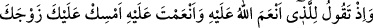
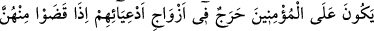
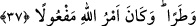

kazâ ve irâdesine itiraz ve inâda düşmekten korumasını niyâz ederiz.
37. (Rasûlüm!) Hani Allâh’ın nîmet verdiği, senin de kendisine iyilik ettiğin
kimseye: Eşini yanında tut, Allah’tan kork!” diyordun. Allâh’ın açığa vuracağı şeyi,
insanlardan çekinerek içinde gizliyordun. Oysa asıl korkmana lâyık olan Allah’tır.
Zeyd, o kadından ilişiğini kesince biz onu sana nikâhladık ki evlâdlıkları, karılarıyla
ilişkilerini kestiklerinde (o kadınlarla evlenmek isterlerse) mü’minlere bir güçlük
olmasın. Allâh’ın emri yerine getirilmiştir.
Rivâyet edildiğine göre önceki âyet nâzil olunca Zeyneb (r.a.) ve kardeşi Abdullah
“Biz râzı olduk, yâ Rasûlallah!” yâni Zeyd ile evliliğe râzıyız, dediler. Bunun üzerine
Rasûlullah (s.a.) Zeyneb (r.a.)’ı Zeyd (r.a.)’a nikâhladı. Ona mehir olarak on dînar,
altmış dirhem, bir baş örtüsü, bir çarşaf, bir gömlek, bir etek, elli müd yiyecek, otuz sâ‘
hurma gönderdi.[213] Zeyneb bir müddet Zeyd ile evli kaldı. Hz. Peygamber (s.a.) bir
gün bir ihtiyaç için Zeyd’in evine geldi. Kendi ihtiyarı olmadan onun muhabbeti gönlüne
düştü. Kul bu gibi durumlarda bir günah kasdı yoksa zaten kınanmaz. Bir anlık bakış,
yâni ilk bakış mübahtır. Hz. Peygamber (s.a.) o zaman şöyle buyurdu: “Sübhânallah! Ey
kalpleri halden hale çeviren Allâh’ım! Kalbimi sâbit kıl!”[214] ve dönüp gitti. Çünkü
daha önce Hz. Zeyneb’den uzak duruyor ve onu istemiyordu. Eğer onu isteseydi kendisi
tâlib olurdu. Allah Teâlâ Hz. Zeyneb’in muhabbetini Rasûlullah (s.a.)’in gönlüne, nefret
ve istemezliği de Hz. Zeyd’in gönlüne düşürdü/attı. Bir müddet sonra Hz. Zeyd
Rasûlullah (s.a.)’e geldi ve: “Yâ Rasûlallah! Ben eşimden ayrılmak istiyorum.” dedi.
Peygamberimiz (s.a.) “Ne oldu, ondan bir kötülük mü gördün?” dedi. Hz. Zeyd:
“Hayır! Ondan ancak iyilik gördüm. Fakat o eşrâftan olduğu için bana karşı
büyükleniyor ve diliyle beni incitiyor.” dedi. Rasûlullah (s.a.) Zeyd’i ondan ayrılmaktan
men etti. Nitekim Allah Teâlâ’nın şu sözü bunu anlatmaktadır:
Ey Muhammed, “Hani Allâh’ın” nîmetlerinin en büyüğü olan İslâm’a, (sana) hizmete
ve seninle beraberliğe muvaffak kılarak “nîmet verdiği, senin de kendisine” güzel
terbiye, âzâd etmek ve evlâdlık edinmekle “iyilik ettiğin kimseye:”
et-Te’vîlâtü’n-Necmiyye’de der ki: “Hani” bu büyük fitne ve imtihanla karşı karşıya
bırakmak, ona katlanmaya güç vermek, eşinden ayrılmak ve onu Rasûlullah (s.a.)’e
teslim etmek konusunda Allâh’ın üzerinde icrâ ettiği hüküm ve irâdesine teslim ve râzı